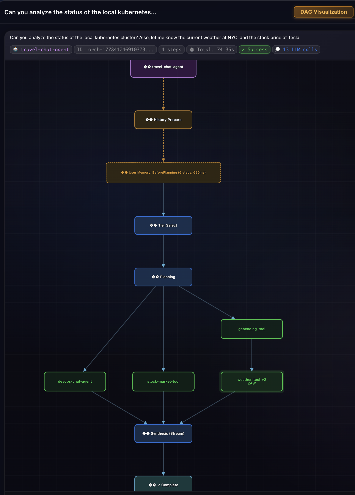
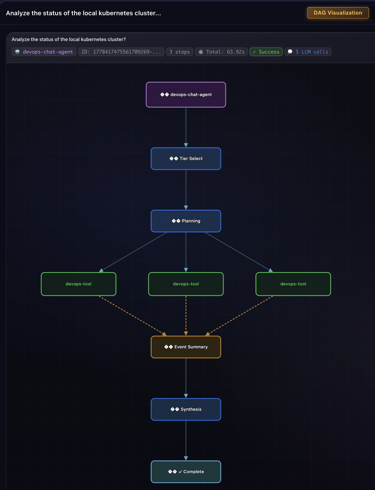

A Microagents Reference Architecture: Dynamic Capability Discovery and Decentralized Coordination
An introduction to a microagents architecture in which specialized tools and agents dynamically register their capabilities with a shared registry, are addressed by logical names rather than hardcoded URLs, and coordinate without a central conductor — with orchestration inside each agent and decentralized coordination across the system. The concepts are grounded in TruvaG3[1], an open-source reference implementation that can be cloned and run on a laptop.
The wiring problem
Most agent frameworks today follow the same pattern. You build an agent, give it a list of tools, and start a loop. The agent reasons, picks a tool, calls it, reads the result, and repeats. If you want a second agent, you usually wire it into the first as another callable, or you put both inside a higher-level orchestrator that decides whose turn it is.
This pattern works at demo scale. It is harder to defend at production scale[30][31]. Adding a tool requires redeploying the agent. Sharing a tool across agents means duplicating registration code in every agent that needs it. Adding a new agent that other agents should be able to reach means rebuilding the orchestration graph that decides routing. Mentally, the model works like a single program with internal function calls. That is fine for prototypes, but it does not match how distributed systems are usually built.
This article describes a different design, borrowed almost entirely from how production microservices are built: a service registry indexed by capability, peers that find each other at runtime, and direct point-to-point calls. There is no central orchestrator routing between participants. There is, however, a per-agent orchestrator that runs each agent's own reasoning loop. The result is a two-layer coordination model that is easier to reason about than a single global one — and one that follows patterns the infrastructure community has refined over the past decade.
The article describes the architecture in concept-first form. The concrete examples — code paths, execution traces, registry screenshots — come from TruvaG3[1], an open-source reference implementation written in Go. TruvaG3 exists to make these patterns easy to inspect. The source code, the example deployments, the design notes, and the registry-viewer web app[13] are all public, and the entire system runs on a laptop in a local Kubernetes cluster. When the article points to a specific behavior, a numbered citation links to the relevant file or directory in the repository.
How today's frameworks coordinate
Before describing the new approach, it helps to look at what is normal today. Most popular agent frameworks share the same wiring approach: the developer hands the framework a complete list of tools and agents — in code or configuration — before the program runs. The framework does not look outside that list at runtime.
The same point, by framework, in everyday terms:
- LangGraph[17] — Build a graph in code that names every agent and every tool you will use. The graph is fixed once the program starts.
- Microsoft Agent Framework[18] — Attach tools to each agent at construction. For multi-agent coordination, declare a graph-based Workflow up front. Both the tools and the workflow are fixed when the program starts.
- OpenAI Agents SDK[19] — Write each agent in code, list its tools, and list which other agents it may hand off to. Every reference is something the developer wrote down by name.
- Google ADK[20] — Define each agent in code, list its tools and its sub-agents. The set of tools and the agent hierarchy are fixed when the program starts.
- CrewAI[21] — Assemble a crew by listing the agents and the tasks you want them to do. The crew works only with what you have given it.
- LlamaIndex Agents[22] — Build each agent with an explicit list of tools. For multi-agent setups, a workflow object holds a fixed list of agents.
- Pydantic AI[23] — Declare each agent with its tools attached. To compose multiple agents, write code that calls each one by name in the order you want.
Tools and agents that run in another process or service are not an exception to this. To use a tool that lives elsewhere, the agent's own code must contain a wrapper that knows the external tool exists and how to reach it. The wrapper is what the framework treats as "the tool"; the framework still requires that wrapper to be present in the source at startup. By default, none of these frameworks reads a shared, live registry to learn what tools or agents are currently available across the deployment, and none lets new tools or agents — deployed elsewhere, after the program has started — become usable to existing callers without a code change.
The shared pattern across all seven is a central coordinator. Some component inside the framework — a graph runner, a crew, a team manager, an LLM-driven dispatch loop, a workflow object — holds the plan, decides the order of operations, and routes work between participants. The participants themselves are passive: they react to calls, constrained by a list of peers and tools that was fixed when the program started. Whether the order is decided by an LLM, a routing graph, or a turn-selection policy, the list it picks from does not change while the program is running. This is the well-known orchestration pattern from distributed-systems literature, where one process directs the others.
Orchestration is not wrong. It gives you a global view, easy retries, and clean state machines. It also gives you a single point of failure, a single point of scale, and a single component that must change every time you add a participant. In multi-agent systems, the trade-offs are the same ones the microservices community faced a decade ago, when it moved away from centralized orchestrators (workflow engines, enterprise service buses) toward decentralized service-discovery patterns[11].
The microagents architecture
The architectural class this article describes has begun to acquire a name in industry literature: a microagents architecture. The term is used in two related senses, and it is worth distinguishing them up front.
At a workflow level, articulated in a recent CIO article on the agentic enterprise[8], microagents are "specialized AI systems designed to perform narrow, well-defined tasks within a workflow," and macro-agents are components that "coordinate multiple micro agents to complete an end-to-end business process." This framing is about division of labor and governance.
At an architectural level, which is the focus of this article, a microagents architecture is a system with the following properties:
- Agents and tools are specialized and independently deployable.
- They register their capabilities with a shared registry at runtime, rather than being wired into a caller's source code.
- They are addressed by logical names — capability names — not by IP addresses or hardcoded URLs.
- They can be independently scaled, replaced, or migrated; callers continue to look them up by the same name.
- Coordination is decentralized — each peer drives its own flow; the registry mediates discovery, not control.
Microsoft's multi-agent reference architecture[6] describes the foundational pattern as a "Dynamic Agent Registry (Service Mesh for Agents)": an orchestrator consults this registry at runtime to discover and route to specialized agents. Alibaba Cloud's recent reference design[7] emphasizes the location-transparency property explicitly: "Agents do not directly hold each other's physical addresses (IP/Port) but query the Agent Registry and use each other's logical names (agentName) to obtain access endpoints. This achieves complete decoupling with location transparency."
The contrast with the seven frameworks in the previous section is direct. Each of those binds every participant at construction; a microagents architecture lets participants come and go independently. The registry is the only thing they need to know about each other, and — in this article's variant — the only thing the LLM needs to know about them either.
This article describes one specific reference design for that class — and that design has a working open-source reference implementation in TruvaG3[1], the framework this article is grounded in. Everything that follows can be cloned, deployed locally, and observed in the live registry-viewer UI. The dynamic registry pattern itself has decades of precedent in service-discovery infrastructure, and the LLM-as-registry-consumer extension is also available in other open-source systems[16]. The architectural point here is the role the registry plays at request time: its current contents are what the LLM sees in its planning prompt, so the LLM picks among capabilities that are dynamically present rather than capabilities that were configured ahead of time.
A different approach: the capability registry
The architecture is built around a single primitive: a capability registry. Every participant — whether a simple tool or a full reasoning agent — publishes the capabilities it offers into a shared index, each identified by name. These capability names are runtime facts about the deployment; they are not configuration carried in any caller's code, and no participant references a peer's capability by name in its own source. When a request needs to be planned, the framework hands the registry's current contents to the LLM as the planning context, and the LLM picks which capabilities to invoke. For example, if the LLM chooses financial_analysis for a step, the framework dispatches that step to whichever endpoint the registry currently lists for financial_analysis. Whether that endpoint is a deterministic function or an agent running its own plan-act-observe loop is invisible at the dispatch site. (In the reference implementation, the index is backed by Redis[27], but the choice of backend does not affect the pattern.)
There are three core roles in the architecture:
| Role | Registers capabilities? | Discovers peers? | Has internal orchestrator? |
|---|---|---|---|
| Tool | Yes | No | No — passive HTTP endpoint |
| Agent | Yes | Yes | Yes — drives a plan-act-observe loop |
| Registry | — | — | No — a passive index |
The difference between Tools and Agents matters. A Tool is a capability provider with no autonomy: it answers calls, returns data, and finishes. An Agent is a provider and a consumer: it answers calls, and while serving them it can find other capabilities in the same registry and call them directly. In a statically-typed language, this difference can be enforced at compile time through interface design. In TruvaG3[1] (written in Go), Tools satisfy a Registry interface (register only); Agents satisfy a Discovery interface that includes Registry (register and discover). Tools cannot call discovery methods, because those methods do not exist on their interface. The framework's design notes[3] document the full contract. The separation becomes a property the type system can check before the code runs.
The registry itself is intentionally simple. It is a key-value index: capabilities map to service IDs, and service IDs map to addresses. Entries expire after a TTL and are kept alive by heartbeats. The registry does not route messages, throttle calls, or apply policy. It is to this architecture what etcd is to Kubernetes — coordination data, not a coordinator.
Self-describing capabilities
A registration carries more than a name. It serves two distinct consumers. The framework reads it for dispatch — a network address and an endpoint per capability. The LLM reads it for planning — a natural-language description of each capability and a structured schema for its inputs and outputs, so it can decide which capability matches a step and what payload to send.
The address resolves to the right form for the deployment. In a Kubernetes cluster, the framework writes a Service DNS name, so calls to the participant load balance across replicas through the cluster's own Service. Outside Kubernetes, it writes a plain host and port. Whichever form ends up in the registry is the form callers use; no agent ever carries a hardcoded URL.
Here is what this looks like in the live registry: the top-level structure of the entry for weather-tool-v2[9], with the Kubernetes metadata sub-object trimmed for display:
{
"id": "weather-tool-v2",
"name": "weather-tool-v2",
"type": "tool",
"address": "weather-tool-v2-service.truvag3-examples.svc.cluster.local",
"port": 80,
"health": "healthy",
"last_seen": "2026-05-07T01:50:18Z",
"capabilities": [
{ "name": "get_current_weather", "endpoint": "/api/capabilities/get_current_weather" },
{ "name": "get_weather_forecast", "endpoint": "/api/capabilities/get_weather_forecast" }
]
}The address and port together are what the framework dials. Each capability inside the capabilities array contributes a relative endpoint. Combined, they yield the full URL the executor calls. For get_current_weather in this deployment, that resolves to:
http://weather-tool-v2-service.truvag3-examples.svc.cluster.local:80/api/capabilities/get_current_weatherIn a non-Kubernetes deployment, the same record would carry an address like weather-tool.example.com and a port chosen by the deployment — 443 for an HTTPS-fronted production service, 8080 for a self-hosted service without TLS. The registry stores the explicit connection target; how the call is wrapped (HTTP, HTTPS, with or without a reverse proxy or service-mesh sidecar) is a deployment concern, not a registry concern. The agent's source code never sees this URL — the framework reads it from the registry at request time and dials.
The capability description itself comes in three layers, each more precise than the last:
- A natural-language description of what the capability does. This is what the LLM reads when deciding whether the capability is relevant to a request at all.
- Structured field hints for inputs and outputs. For each field, the participant declares a name, a type (string, number, boolean, object, array), an example value, and a short description. The hints are precise enough for the LLM to know the input field is called
locationand notcity; thatamountshould be a number, not a string; and that the response will contain a field calledcurrency.code. The output side serves as a contract — anything that needs to consume this capability's response has a declared schema to work against[32]. - An optional full JSON Schema, served by the participant on a dedicated schema endpoint. Deployments that need stricter validation can opt into this layer; the field-hint level is sufficient for typical production use.
Each capability inside the capabilities array carries those three description layers. Here is get_current_weather in full:
{
"name": "get_current_weather",
"description": "Gets current weather conditions for a location including temperature, humidity, and wind.",
"endpoint": "/api/capabilities/get_current_weather",
"input_types": ["json"],
"output_types": ["json"],
"input_summary": {
"required": [
{
"name": "lat",
"type": "number",
"description": "Latitude coordinate (-90 to 90)",
"example": "40.7128"
},
{
"name": "lon",
"type": "number",
"description": "Longitude coordinate (-180 to 180)",
"example": "-74.0060"
}
]
}
}And here is devops_operations, an external capability served by an Agent — devops-chat-agent[15], the same agent featured in the multi-domain execution example later in the article — that runs its own internal plan-act-observe loop behind this endpoint:
{
"name": "devops_operations",
"description": "Handles Kubernetes and infrastructure operations end-to-end: from investigation and diagnostics to remediation and verification. Delegate any DevOps task as a natural language request and receive a synthesized response with findings, actions taken, and current state.",
"endpoint": "/query",
"input_types": ["json"],
"output_types": ["json"],
"input_summary": {
"required": [
{
"name": "query",
"type": "string",
"description": "Natural language DevOps or infrastructure question to delegate",
"example": "Which pods in truvag3-examples are not Ready and what do their logs say?"
}
],
"optional": [
{
"name": "session_id",
"type": "string",
"description": "Session ID for conversational context (omit for stateless one-shot queries)",
"example": "sess_abc123"
}
]
}
}The two records are structurally identical. A caller looking up either capability sees the same fields in the same structure — name, description, endpoint, input and output types, and the structured field hints. The fact that one is served by a stateless tool and the other by an agent that runs its own internal plan-act-observe loop is invisible at the registry layer. From the LLM's point of view at planning time, a capability is a capability — it picks by what the capability does, not by what kind of process serves it.
The consequence: a participant's registration is enough, on its own, to know how to reach it and what data its capabilities accept and return. There is no separate API documentation that has to be kept in sync, no client SDK with hardcoded signatures, and no version-pinned schema file. How a multi-step plan actually executes against this data — formatting payloads, dispatching, threading values between steps — belongs to the per-agent orchestrator described later in the article.
What makes the discovery dynamic
The discovery is dynamic in three senses, each of which matters in production. To be precise about the term: discovery here does not mean the agent's code calling a lookup function. The agent's code does not know any capability names. It is the chain by which the registry's current state reaches the LLM at planning time, and from there reaches the address that handles each step.
The mechanics behind the three properties below — a key-value registry, TTL-based liveness, additive registration — are borrowed from service-discovery patterns that have been used in microservice systems for over a decade. What is distinctive in the microagents version of those mechanics is the role they play: the consumer of the registry's contents is not application code with a known target name; it is an LLM choosing from a runtime menu. The plumbing is standard. The mediation is not. This combination is uncommon in agent frameworks, where tools are usually bound to agents at construction time.
flight-tool and hotel-tool. (Two capabilities are shown per tool for clarity; flight-tool publishes four in total and hotel-tool publishes three.) (A) flight-tool deploys and registers; the registry now contains search_flights and cheapest_dates, each mapped to flight-tool — entries that did not exist a moment ago. (B) hotel-tool deploys alongside and contributes new capabilities — search_hotels and hotel_ratings; the catalog grows, and the LLM can now plan a multi-step "find a flight and find a hotel" request, all without any agent code change. (C) hotel-tool stops heartbeating; its entries expire within one TTL window, and the catalog shrinks back to where it was after Panel A. The three panels visualize the three properties described below: a runtime tool list, a live registry, and zero-config additivity.The same mechanism applies to agents. research-agent-telemetry[10] publishes capabilities like financial_analysis and sentiment_analysis; devops-chat-agent[15] publishes devops_operations. Each agent registers with the same shared registry, exactly the way a tool would. The only structural difference, invisible at the registry layer, is what runs behind those endpoints: a plan-act-observe loop instead of a deterministic function.
t = 0s, research-agent-telemetry deploys; the registry now lists financial_analysis and sentiment_analysis, both newly added. (B) At t = 90s, devops-chat-agent deploys alongside; the registry now also contains devops_operations. Both agents register the same way a tool would — capability name, endpoint, field hints, and TTL-driven liveness — and the registry treats both kinds of participants identically. From the LLM's planning prompt, all three capabilities look like any other. The structural difference is invisible at the registry layer: behind these endpoints runs a plan-act-observe loop, not a stateless function.The tool list is runtime data, not code. The agent's source names no tool and no capability. The set of capabilities a request can use is not declared anywhere in the agent's code — it is whatever the registry currently advertises. When a request arrives, the framework reads that current state and presents it to the LLM as the planning context. Only at that moment, when the LLM is shown a fresh menu and asked to plan against the incoming request, does any specific capability enter the picture. The LLM picks from the menu; the framework then dispatches each chosen step to the address the registry currently lists for it. The same chosen capability, picked again in a later request, can land on a different address if the topology has shifted in between.
A live registry, not a static catalog. Every participant sends a heartbeat to the registry every 15 seconds, refreshing a 30-second TTL on its entry. If a participant crashes, shuts down, or loses network connectivity, it drops out of the registry within at most one TTL window. What the LLM sees on its next planning prompt is therefore the set of participants currently running and reachable — nothing more, nothing less. There is no separate health-check system; liveness is the registration.
Zero-config additivity. Deploying a new tool or agent makes its capabilities part of every running agent's planning catalog within one refresh cycle. No agent code changes. No central manifest is updated. No agent needs to be redeployed. The same property holds in reverse: removing a participant is clean — its registrations expire, and the LLM simply stops seeing it as an option. This is the property that separates a live registry from a static dependency graph.
These three properties together — a runtime tool list, TTL-driven liveness, and additive registration — turn a key-value index into something a multi-agent system can be built on. They also make the architecture easy to extend: adding a participant is purely additive, and the system never needs a coordinated redeploy to support a new capability.
Two coordination layers
One way to see the architecture is as a system with two distinct coordination layers, each using a different pattern.
Inside an agent: orchestration
Each Agent has its own per-request orchestrator. When a request arrives, the orchestrator hands the LLM its current capability catalog (kept in sync with the registry) and asks for a plan. The plan it gets back is structured as a directed acyclic graph (DAG)[28][29] — each step names a capability and lists its upstream dependencies, but no step ever loops back to itself. The orchestrator then executes that DAG step by step with parallelism where possible — resolving each capability to a concrete endpoint at execution time, handling retries and parameter resolution, and synthesizing the final response. This is orchestration in the traditional sense: one conductor directing a sequence of steps against a known plan. It is the right pattern for a single agent's reasoning loop, where global state is needed.
Between participants: decentralized coordination
Between participants, no such conductor exists. Each Agent runs its own orchestrator independently. When one Agent needs a capability that another participant exposes, it asks the registry, gets an address, and calls the endpoint directly over HTTP. The receiving participant — Tool or Agent — handles the call on its own terms. Nothing in the middle routes, sequences, or coordinates. This is decentralized coordination: peers acting on a shared protocol (the capability contract) rather than being directed by a controller.
The microservices analogy is direct. A microservice has step-by-step business logic on the inside (orchestration) and interacts with peers through service discovery and direct calls (decentralized coordination). The architecture applies the same pattern to multi-agent systems: orchestration inside each agent, decentralized coordination between agents and tools. In the reference implementation, the per-agent orchestrator and its outbound HTTP dispatch live in the orchestration/ package[4]; the registry and discovery interfaces that participants use to find each other live in core/[2].
Two executions, examined
The clearest way to understand an architecture is to look at real runs. Below are two captured executions from the reference implementation — one showing orchestration inside an agent, the other showing one agent calling another.
Switzerland trip planning: orchestration with tools
The first run is in response to a single query:
"Find out the top 3 destinations for tourists in Switzerland, by popularity, and give me their weather right now and a good place to stay at each of those locations."
The agent that received this query — travel-chat-agent[12] — is one Agent, the kind described in this article. The query is interesting because the agent cannot plan the full response up front: it does not know the three top destinations until it has performed the web search. Its orchestrator therefore runs the request in three phases, returning to plan twice as new information becomes available — directly exercising the loop-back arrow shown in the orchestration diagram earlier in the article.
![Execution DAG for the Switzerland query, captured from the registry viewer. The diagram is laid out vertically and shows three distinct phases. Top: a Planning node feeds a single web-search-tool call. Then a 'Phase 1 → 2' transition node, followed by a Tier Select node, followed by a Phase Plan node, which branches into three parallel geocoding-tool calls. Then a 'Phase 2 → 3' transition node, followed by another Tier Select and Phase Plan, which branches into six parallel calls — three weather-tool-v2 calls and three hotel-tool calls. All ten tool steps converge into a Synthesis (Stream) node at the bottom. The phase boundaries are visually distinct.](switzerland-execution-dag.png)
What this run demonstrates about the microagents architecture in action:
- The plan referred to capabilities, not addresses. Each step named a capability —
web_search,geocode_location,get_current_weather,search_hotels— never a URL or hostname. The framework resolved each name to a concrete endpoint at execution time by reading the live registry. - Dependencies were data-driven, not configured. Independent steps ran in parallel within each phase (three geocodings together; six weather-and-hotel calls together); cross-phase steps waited for upstream output. The structure was produced by the LLM planning against the catalog, not by a hand-wired routing graph somewhere.
- Participants were not bound to the agent at construction. Each Tool registered independently from its own deployment.
travel-chat-agentlearned of them only because they were currently in the catalog when this request arrived. A tool deployed five minutes earlier would have been just as eligible. - Cross-step data flow used registered field schemas. The destination names from
web_search's response flowed into the geocoding inputs; the latitude and longitude outputs of geocoding flowed into the weather inputs — all via the output field hints each capability had published in its registration. No separate data-pipeline definition was required for any of it. - The LLM controls how many phases the run takes. It plans only what it can plan with the data already in hand. Phase 1's web search is all the LLM could plan before knowing the destinations. Once those came back, the LLM planned Phase 2 (three geocoding calls) — and only after coordinates came back did it plan Phase 3 (six weather-and-hotel calls). Each phase boundary is the LLM seeing fresh results and deciding what comes next.
A multi-domain query: agents and tools as peers
The Switzerland run shows the inside of one agent. To see the other coordination layer in practice — and to make the article's central claim visible in a single plan — here is a second captured execution. The query crosses three unrelated domains:
"Can you analyze the status of the local Kubernetes cluster? Also, let me know the current weather at NYC, and the stock price of Tesla."
travel-chat-agent reads the registry's current contents — a catalog of capabilities, not a typed list of tools and agents — and plans a four-step response. The LLM doesn't know (and doesn't need to know) which capabilities are served by tools and which by agents:
devops_operations— served bydevops-chat-agent[15], an agentgeocode_location— served bygeocoding-tool, a toolstock_quote— served bystock-market-tool, a toolget_current_weather— served byweather-tool-v2, a tool (its inputs depend on the geocoding output)

travel-chat-agent's perspective in the registry-viewer UI[13]. Four capability invocations in one plan, drawn from the same catalog. One of them — devops_operations — happens to be served by an agent; the other three by tools. From the dispatch site there is no visible difference between them.Behind the devops_operations step is a complete second execution. devops-chat-agent receives the request, plans its own response against its own catalog, and runs three tool calls — get_cluster_status and two scoped get_pods calls against devops-tool — then synthesizes a single answer and returns it to travel-chat-agent.

devops-chat-agent's perspective in the same UI. The orchestration pattern shown earlier in the article — plan, execute, synthesize — runs entirely inside this agent's process. The structured response of this whole DAG is what gets returned through Figure 11's devops_operations step.What this run demonstrates, in concrete form:
- The LLM cannot — and need not — distinguish agents from tools. The four capabilities in Figure 11's plan came from the same catalog and were chosen on what they do, not on what kind of process serves them. The architectural claim that "tools and agents are uniform peers" is not a design ideal here; it is what the LLM literally observed and acted on.
travel-chat-agentdidn't see (and didn't need to see) that thedevops_operationsstep would require three further tool calls inside another process — it received structured JSON matching the capability's published schema. - Decentralized coordination between participants. Each of the four steps in Figure 11 is a registry lookup followed by a direct HTTP call. There is no central process directing the handoff to
devops-chat-agent, and no special agent-to-agent protocol — just the same dispatch mechanism every other step uses. - Orchestration inside each agent. Figure 12 is the plan-act-observe loop running inside
devops-chat-agent: a multi-step plan, parallel tool calls, a synthesis step. The pattern is identical to the Switzerland execution above — same orchestrator, different agent.
What this unlocks
Two architectural properties fall out of this design — properties that are hard to get when participants are wired statically.
Tools and Agents compose interchangeably. Because the call site does not distinguish between them, a deployment can swap a tool for an agent that exposes the same capability without callers changing. A capability that begins as a deterministic tool (a small service with an HTTP handler) can later be replaced by a reasoning-driven agent that performs its own internal work before responding — under the same capability name. Callers continue to look it up by name and continue to receive structured responses against the same schema. The promotion is a deployment change, not an architectural one.
Adding a participant requires no central change. Drop a new participant into the deployment. It registers itself, advertises its capabilities, and is immediately discoverable. No orchestrator graph needs editing, no routing table needs updating, no central deployment needs redeploying. Within the registry's normal propagation window, the new participant is visible to every existing caller — and can be invoked by them without any change to their own code or configuration. This is the operational property that service-discovery infrastructure gives to ordinary microservices, carried over to the microagents domain.
Some practical consequences (illustrated against a Kubernetes deployment, since that's the most common production setup):
- Builds on what you already run. For teams already running Kubernetes microservices, the operational model is unchanged. New tools and agents are new Deployments and Services. Scaling, rollouts, observability, incident response — all unchanged. Dev teams learn the registry-interaction contract (a small library, a capability schema) and, for those building agents, the per-agent orchestrator's design choices; ops teams keep operating the platform they already operate. The only genuinely new things to learn are capability-keyed addressing, LLM-driven per-agent planning, and registry liveness. Everything else maps directly onto patterns your microservices already follow.
- Heterogeneous, multi-team deployments. Different teams can publish their own tools and agents to the same registry — their participants live in their own namespaces, follow their own release cadence, and are owned by their own on-call rotations. A team that adds a new "compliance-check" capability can have it consumed by every existing agent without filing a ticket or coordinating a release. Cross-team discovery is the default, not the exception.
- Horizontal scaling is the standard kind. A heavily used tool is just a Deployment whose replicas sit behind a Service. The Service DNS is what the registry holds, and the cluster's own Service load balances calls across the replicas. The same HPA you use for any other workload scales it; the same rolling-update mechanics handle versioned releases. The architecture doesn't need to know how many replicas exist — the Service does.
- Cross-deployment composition. A capability published from one Kubernetes namespace, cluster, or team can be discovered and called from another, as long as the registry is reachable across both. The architecture imposes no notion of a "primary" cluster or a central control point; participants form a flat namespace addressable by capability.
- No specialized orchestration control plane. There is no proprietary orchestrator process, no vendor-specific workflow engine, and no dedicated control plane to license, scale, or operate separately. The registry itself is just a key-value store (Redis, etcd, Consul, or any equivalent) — likely something you already run.
- Failure isolation matches your existing model. A misbehaving participant is recovered the same way any pod is — readiness probes, restart policies, PDBs, the cluster's autoscaler. The registry's TTL evicts unreachable entries automatically, so dead participants stop being routed to without any cleanup step. There is no global state to repair, no cross-participant lock to release, and no orchestrator process whose failure cascades into everything else.
The trade-offs you should know
An honest description should also name what you give up.
No global execution view, by default. Without a central conductor, no single component knows the full state of all in-flight work. Operations and debugging rely on the same distributed-tracing infrastructure that microservice systems use — trace IDs propagated through calls, spans collected per participant, and end-to-end views reassembled from a trace store. This is well-understood and works well in practice, but the absence of a built-in global view is real: there is no point inside the architecture from which to ask "what is happening everywhere right now?"
Cross-participant sequencing is harder. If you need an explicit, system-wide workflow that spans multiple agents and tools — sequenced from a single source of truth, with explicit failure handling and compensations — the decentralized pattern does not give it to you for free. You will need to reintroduce orchestration at the inter-agent layer in whatever form suits the use case: a coordinating agent that drives the others, an external workflow engine, or an event-driven saga with explicit orchestration. The decentralized model handles "each agent can serve and call peers" well; it does not handle "this multi-step process must run in this exact order, with these compensations on failure" — that is a different problem requiring a different approach, and decentralized coordination is not always the right answer.
The registry is a shared dependency. Agents and tools can keep serving in-flight requests without the registry, but new discoveries cannot resolve while it is down. The architecture moves the single point of failure from a central orchestrator process to a passive data store — a trade-off common to most service-discovery designs.
Run it yourself
The reference implementation, TruvaG3[1], is open source. Step-by-step setup instructions for the local-Kubernetes deployment — Redis, the registry-viewer web app, and the bundled example tools and agents[5] — are in the project's Getting Started guide[14]. The full deployment runs on a laptop in a kind cluster.
Both captured executions in "Two executions, examined" come from this same setup. Once the bundled examples[5] are deployed, the two user queries shown there can be run verbatim against your own travel-chat-agent, and the registry-viewer's Execution DAG tab will produce screenshots and trace JSON files equivalent to Figures 10–12 and references [24]–[26]. All the agents and tools involved — travel-chat-agent, devops-chat-agent, and the half-dozen tools they invoke — are part of the bundled examples; no additional setup is needed. Nothing in this article is theoretical.
Conclusion
At the scale of an enterprise agentic platform — many teams, many tools and agents, many independent release cadences — the architecture described in this article is a pattern well-matched to that scale. Dynamic capability discovery, uniform peers, a passive registry, orchestration inside each agent, and decentralized coordination between participants: this combination lets specialized teams own their own participants, ship them on their own schedules, and have their work composed into every other team's agents without coordinated releases or central registration steps. The runtime mechanics ride on infrastructure most organizations already operate — service discovery, load balancing, observability, rolling releases — not on a proprietary orchestration product whose failure modes, scaling characteristics, and cost ceilings become operational concerns of their own.
The mechanics themselves are not new. They borrow from decades of service-discovery practice in distributed systems[11], and the LLM-as-registry-consumer extension is also available in other open-source systems[16]. What this article contributes is a vendor-neutral architecture treatment paired with a Go reference implementation that runs on a laptop — an architecture doc with a clone-and-run companion.
References
- TruvaG3 — repository. Open-source reference implementation of the architecture described in this article. https://github.com/truvaagents/truva-g3
- TruvaG3 —
core/package. Framework interfaces (Registry,Discovery,Component,AIClient) and base implementations (BaseTool,BaseAgent), plus the Redis-backed service-discovery layer that participants use to find each other. https://github.com/truvaagents/truva-g3/tree/main/core - TruvaG3 —
FRAMEWORK_DESIGN_PRINCIPLES.md. The Tool/Agent boundary contract and the rationale behind the typed-interface separation. https://github.com/truvaagents/truva-g3/blob/main/FRAMEWORK_DESIGN_PRINCIPLES.md - TruvaG3 —
orchestration/README.md. The orchestration module's user-facing README. Section 4, "AI Orchestration in Detail", walks through how the AIOrchestrator processes an AI-driven request — interpreting the user query, discovering capabilities in the catalog, building the execution plan, and synthesizing the response. The corresponding source code lives under the same directory. https://github.com/truvaagents/truva-g3/blob/main/orchestration/README.md - TruvaG3 —
examples/directory. Sample tools, agents, and end-to-end deployments, including the chat agents used in the walkthrough. https://github.com/truvaagents/truva-g3/tree/main/examples - Microsoft. Multi-Agent Reference Architecture. The phrase "Dynamic Agent Registry (Service Mesh for Agents)" quoted in this article appears under the Patterns section as item #2 in the list of foundational patterns. URL: https://microsoft.github.io/multi-agent-reference-architecture/docs/reference-architecture/Reference-Architecture.html
- Alibaba Cloud. Configuration-Driven Dynamic Agent Architecture Network: Achieving Efficient Orchestration, Dynamic Updates, and Intelligent Governance. The location-transparency quote — "Agents do not directly hold each other's physical addresses (IP/Port) but query the Agent Registry and use each other's logical names (agentName) to obtain access endpoints. This achieves complete decoupling with location transparency." — appears under Core Design at the Architectural Level: Peer Collaboration and Decoupling, in the subsection on A2A Protocol design principles. URL: https://www.alibabacloud.com/blog/configuration-driven-dynamic-agent-architecture-network-achieving-efficient-orchestration-dynamic-updates-and-intelligent-governance_602564
- Tadepalli, R. Micro and macro agents: The emerging architecture of the agentic enterprise. CIO, April 14, 2026. Defines micro agents as "specialized AI systems designed to perform narrow, well-defined tasks within a workflow" (under the section The rise of micro agents) and macro agents as components that "coordinate multiple micro agents to complete an end-to-end business process" (under The emergence of macro agents). URL: https://www.cio.com/article/4157977/micro-and-macro-agents-the-emerging-architecture-of-the-agentic-enterprise.html
- TruvaG3 —
examples/weather-tool-v2/. Source code for the Tool whose registration produces theget_current_weathercapability shown in this article. https://github.com/truvaagents/truva-g3/tree/main/examples/weather-tool-v2 - TruvaG3 —
examples/agent-with-telemetry/. Source code for the Agent that registers asresearch-agent-telemetry, used as an example agent in this article. https://github.com/truvaagents/truva-g3/tree/main/examples/agent-with-telemetry - Lewis, J. & Fowler, M. Microservices. martinfowler.com, 25 March 2014. The seminal article in which the microservices community articulated the migration away from centralized integration infrastructure. ESB products, the authors note, "often include sophisticated facilities for message routing, choreography, transformation, and applying business rules"; "the microservice community favours an alternative approach: smart endpoints and dumb pipes." Services in the new pattern are "choreographed using simple RESTish protocols rather than complex protocols such as WS-Choreography or BPEL or orchestration by a central tool." URL: https://martinfowler.com/articles/microservices.html
- TruvaG3 —
examples/travel-chat-agent/. Source code for the Agent that registers astravel-chat-agent— the agent whose Switzerland-query execution is the basis for the trace walkthrough in this article. https://github.com/truvaagents/truva-g3/tree/main/examples/travel-chat-agent - TruvaG3 —
examples/registry-viewer-app/. Source code for the registry-viewer web app that captured the Switzerland-query DAG screenshot shown in this article. The same UI shows registered services, their capabilities, and live execution DAGs athttp://registry.localhost/when the bundled local-Kubernetes setup is running. https://github.com/truvaagents/truva-g3/tree/main/examples/registry-viewer-app - TruvaG3 —
GETTING_STARTED.md. Step-by-step setup guide for the local-Kubernetes deployment of TruvaG3, covering the kind cluster, Redis, the registry-viewer web app, and the bundled example tools and agents. https://github.com/truvaagents/truva-g3/blob/main/GETTING_STARTED.md - TruvaG3 —
examples/devops-chat-agent/. Source code for the Agent that registers asdevops-chat-agentand exposesdevops_operationsas its public capability shown in this article. https://github.com/truvaagents/truva-g3/tree/main/examples/devops-chat-agent - Nacos — A2A Agent Registry. Open-source service-discovery platform extended with an A2A agent-registry feature (generally available since Nacos 3.1.0, September 2025), implementing the same pattern described in this article. Integrated with multi-agent frameworks including AgentScope, Spring AI Alibaba, and the Dify A2A plugin. URL: https://nacos.io/en/docs/latest/manual/user/ai/agent-registry/
- LangGraph — Overview. Official LangGraph documentation showing the construction-time wiring pattern:
StateGraph(...),add_node(),add_edge(), thengraph.compile()— the graph is named and fixed at definition time. URL: https://docs.langchain.com/oss/python/langgraph/overview - Microsoft Agent Framework — Overview. The successor to AutoGen and Semantic Kernel (GA April 2026, .NET and Python). Official quickstart shows tools attached at construction (
tools: [...]) and graph-based Workflows for multi-agent coordination. URL: https://learn.microsoft.com/en-us/agent-framework/overview/ - OpenAI Agents SDK — Quickstart. Official quickstart showing
Agent(name=..., handoffs=[history_tutor_agent, math_tutor_agent])— both tools and inter-agent handoffs are named at agent declaration. URL: https://openai.github.io/openai-agents-python/quickstart/ - Google ADK — Quickstart. Official Google ADK quickstart showing the construction-time wiring pattern:
Agent(name=..., model=..., tools=[google_search])— tools are passed to the agent constructor as a fixed list. Multi-agent setups extend this withsub_agents=[...]. URL: https://adk.dev/get-started/quickstart/ - CrewAI — Quickstart. Official CrewAI quickstart showing the crew construction pattern:
Crew(agents=self.agents, tasks=self.tasks, process=Process.sequential, ...)— agents and tasks are passed to the constructor as fixed lists. URL: https://docs.crewai.com/en/quickstart - LlamaIndex — Understanding agents. Official LlamaIndex documentation showing
FunctionAgent(tools=[multiply, add], llm=llm, ...)— agents are built with an explicit tool list at construction time. URL: https://developers.llamaindex.ai/python/framework/understanding/agent/ - Pydantic AI — Tools. Official Pydantic AI tools documentation showing both
tools=[roll_dice, get_player_name]as a constructor argument and the@agent.tool/@agent.tool_plaindecorators — both bind tools to the agent at construction time. URL: https://pydantic.dev/docs/ai/tools-toolsets/tools/ - TruvaG3 — execution trace JSON for the Switzerland run. The full plan, step-by-step results, LLM interactions, and DAG metadata for the three-phase Switzerland execution shown in Figure 10. Captured from the registry-viewer UI's Execution DAG tab. URL: https://github.com/truvaagents/truva-g3/blob/main/www/blogs/dag-switzerland-full-execution.json
- TruvaG3 — execution trace JSON for the multi-domain outer run. The full plan, step-by-step results, LLM interactions, and DAG metadata for travel-chat-agent's four-step plan shown in Figure 11. The user-profile RAG context (memorized via the agentic-memory tool) is shown with its identifying values redacted to neutral placeholders. URL: https://github.com/truvaagents/truva-g3/blob/main/www/blogs/dag-agent-to-agent-execution-agent1.json
- TruvaG3 — execution trace JSON for the multi-domain inner run. The full plan, step-by-step results, LLM interactions, and DAG metadata for devops-chat-agent's three-step plan shown in Figure 12 (the inner trace returned through Figure 11's
devops_operationsstep). URL: https://github.com/truvaagents/truva-g3/blob/main/www/blogs/dag-agent-to-agent-execution-agent2.json - TruvaG3 —
AUTO_DISCOVERY_GUIDE.md. The framework's operations guide for the auto-discovery subsystem. Its "Extending: Pluggable Backends" section documents how to swap Redis for alternatives: "The framework ships with a Redis/Valkey-backed registry as the default, but the registry is pluggable behind thecore.Discoveryinterface. You can swap in etcd, Consul, an in-memory mock for tests, or anything else that satisfies the contract." URL: https://github.com/truvaagents/truva-g3/blob/main/docs/operations/AUTO_DISCOVERY_GUIDE.md - Wikipedia, "Directed acyclic graph." Comprehensive open-access reference with multiple diagrams (DAG examples, topological ordering, PERT charts, citation networks), plain-language definition, and an applications section covering job scheduling, version control, compilation order, causal models, and dependency tracking — the same patterns used in the article's execution plans. URL: https://en.wikipedia.org/wiki/Directed_acyclic_graph
- Sedgewick, R., & Wayne, K. Algorithms, 4th Edition booksite, Section 4.2 — Directed Graphs. Princeton University. Freely accessible companion to the textbook. Defines directed acyclic graphs (DAGs), states the topological-order equivalence, and lists real-world applications including job scheduling, build/compilation order, and dependency resolution — the same shape the article uses for the orchestrator's plan steps. URL: https://algs4.cs.princeton.edu/42digraph/
- Anthropic. How we built our multi-agent research system, June 13, 2025. First-hand engineering account from the team that built and operates Anthropic's Research feature — a multi-agent system serving production traffic at Claude's scale. Cited in this article in §"The wiring problem" as primary-source evidence for the orchestrator-coordination half of the production-scale claim — the "higher-level orchestrator that decides whose turn it is" pattern named in the preceding paragraph. The post's "Synchronous execution creates bottlenecks" subsection documents a specific operational consequence of that wiring: "Currently, our lead agents execute subagents synchronously, waiting for each set of subagents to complete before proceeding. This simplifies coordination, but creates bottlenecks in the information flow between agents. For instance, the lead agent can't steer subagents, subagents can't coordinate, and the entire system can be blocked while waiting for a single subagent to finish searching." URL: https://www.anthropic.com/engineering/multi-agent-research-system
- Fourney, A. et al. Magentic-One: A Generalist Multi-Agent System for Solving Complex Tasks. Microsoft Research, November 2024 (arXiv:2411.04468). First-hand engineering account from the Microsoft Research team that built Magentic-One. Cited in this article alongside Anthropic [30] in §"The wiring problem" as primary-source evidence for the static-composition half of the production-scale claim — the "list of tools" / fixed-roster shape named in the preceding paragraph. In §6.2 "Limitations," under the "Fixed team membership" bullet, the authors explicitly name fixed agent composition as an operational limit — and, in the final sentence, sketch the fix that is essentially this article's thesis: "Magentic-One's composition is fixed to a common set of five agents: Orchestrator, WebSurfer, FileSurfer, Coder, and ComputerTerminal. When agents are not needed, they simply serve as a distraction to the Orchestrator, and this may lower performance. Conversely, when extra expertise might be needed, it is simply unavailable. We can easily imagine an alternative approach where agents are added or removed dynamically, based on the task need." URL: https://arxiv.org/abs/2411.04468
- Davis, G. Multi-agent workflows often fail. Here's how to engineer ones that don't. GitHub Blog, February 24, 2026. GitHub Blog post on engineering reliable multi-agent workflows, drawing on GitHub's experience with agentic developer tooling. Cited in this article in §"Self-describing capabilities" as evidence for the load-bearing role of structured field schemas in agent-to-agent communication. The post's central thesis, stated up front: "Most multi-agent workflow failures come down to missing structure, not model capability." It elaborates on the specific failure pattern: "Multi-agent workflows often fail early because agents exchange messy language or inconsistent JSON. Field names change, data types don't match, formatting shifts, and nothing enforces consistency." URL: https://github.blog/ai-and-ml/generative-ai/multi-agent-workflows-often-fail-heres-how-to-engineer-ones-that-dont/
Cite as: Tripathi, N. (2026). A Microagents Reference Architecture: Dynamic Capability Discovery and Decentralized Coordination. https://truvag3.dev/blogs/microagents-architecture
© 2026 Neelabh Tripathi. Licensed under CC BY 4.0.